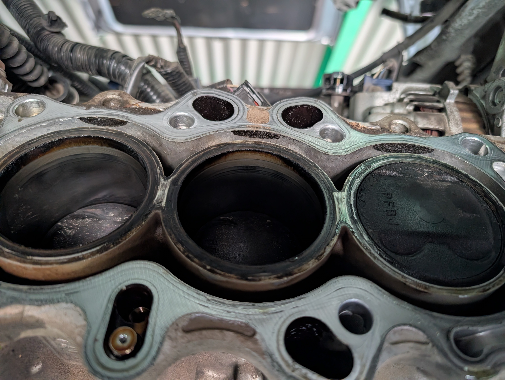
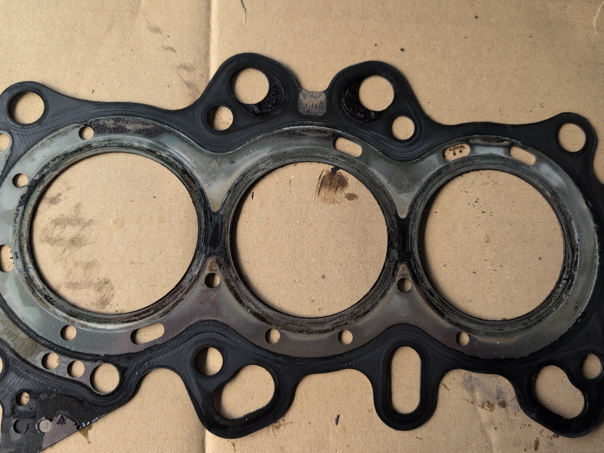

HH6 アクティバン｜冷却水が減る症状とヘッドガスケット交換
車種：ホンダ アクティバン
型式：HH6
作業箇所：エンジン・冷却系統
作業内容：ヘッドガスケット交換
入庫時の症状
お客様から冷却水が減るとの相談があり、 車両の点検を行いました。
点検で確認したこと
冷却水のサブタンクを確認すると、 冷却水が黒く変色していました。
排気ガスが冷却水側に混入している可能性を考え、 エンジン内部を確認することにしました。
修理内容
エンジンのシリンダーヘッドを取り外し、 ヘッドガスケットを交換しました。


修理後の状態
ヘッドガスケット交換後、車両はお客様のもとへ戻り、 現在も普段通り使用されています。 その後、特に不具合の申し出はありません。
今回のポイント
冷却水が減る症状では、冷却系統だけでなく、 エンジン内部から排気ガスが混入していないか 確認することも重要です。
今回はサブタンクの冷却水が黒く変色していたことから、 排気ガスの混入を疑い、ヘッドガスケット交換を行った事例です。